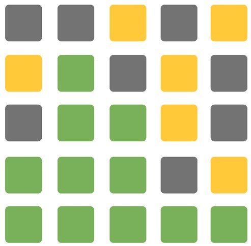

|
Gemp
Gemp is a website created as a final project for Web Programming Curricular Unit. Was used MAMP as Local Database and HTML, CSS, PHP and JS as technologies. |
|
|
Houdina
Houdina is an application created as a final project for the Mobile Device Programming. Was used Firebase as online Database and Flutter and Android Studio as technologies. |
|

|
Beauty and Hairdressing School
BHSchool is a website created as a final project for Distributed Systems Unit. Was used MySQL as Local Database, Spring as Framework and Java as technologie. |
|  |
Wordle
Wordle is an application created as a final project for Human Computer Interaction. A file was used as a local Database and JavaFX as technologie. |